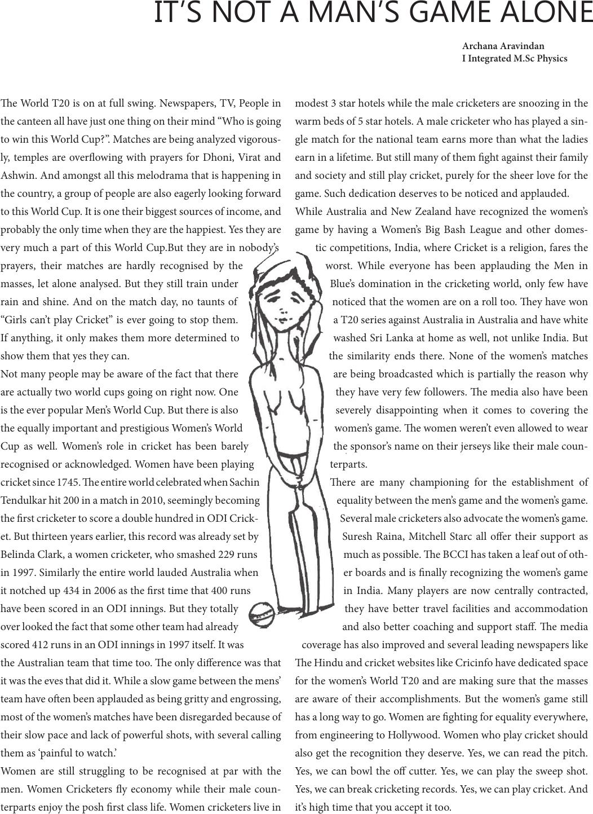

IT’S NOT A MAN’S GAME ALONE
Archana Aravindan
I Integrated M.Sc Physics
e World T20 is on at full swing. Newspapers, TV, People in
the canteen all have just one thing on their mind “Who is going
to win this World Cup?”. Matches are being analyzed vigorous-
ly, temples are overowing with prayers for Dhoni, Virat and
Ashwin. And amongst all this melodrama that is happening in
the country, a group of people are also eagerly looking forward
to this World Cup. It is one their biggest sources of income, and
probably the only time when they are the happiest. Yes they are
very much a part of this World Cup.But they are in nobody’s
prayers, their matches are hardly recognised by the
masses, let alone analysed. But they still train under
rain and shine. And on the match day, no taunts of
“Girls can’t play Cricket” is ever going to stop them.
If anything, it only makes them more determined to
show them that yes they can.
Not many people may be aware of the fact that there
are actually two world cups going on right now. One
is the ever popular Men’s World Cup. But there is also
the equally important and prestigious Women’s World
Cup as well. Women’s role in cricket has been barely
recognised or acknowledged. Women have been playing
cricket since 1745. e entire world celebrated when Sachin
Tendulkar hit 200 in a match in 2010, seemingly becoming
the rst cricketer to score a double hundred in ODI Crick-
et. But thirteen years earlier, this record was already set by
Belinda Clark, a women cricketer, who smashed 229 runs
in 1997. Similarly the entire world lauded Australia when
it notched up 434 in 2006 as the rst time that 400 runs
have been scored in an ODI innings. But they totally
over looked the fact that some other team had already
scored 412 runs in an ODI innings in 1997 itself. It was
the Australian team that time too. e only dierence was that
it was the eves that did it. While a slow game between the mens’
team have oen been applauded as being gritty and engrossing,
most of the women’s matches have been disregarded because of
their slow pace and lack of powerful shots, with several calling
them as ‘painful to watch.’
Women are still struggling to be recognised at par with the
men. Women Cricketers y economy while their male coun-
terparts enjoy the posh rst class life. Women cricketers live in
modest 3 star hotels while the male cricketers are snoozing in the
warm beds of 5 star hotels. A male cricketer who has played a sin-
gle match for the national team earns more than what the ladies
earn in a lifetime. But still many of them ght against their family
and society and still play cricket, purely for the sheer love for the
game. Such dedication deserves to be noticed and applauded.
While Australia and New Zealand have recognized the women’s
game by having a Women’s Big Bash League and other domes-
tic competitions, India, where Cricket is a religion, fares the
worst. While everyone has been applauding the Men in
Blue’s domination in the cricketing world, only few have
noticed that the women are on a roll too. ey have won
a T20 series against Australia in Australia and have white
washed Sri Lanka at home as well, not unlike India. But
the similarity ends there. None of the women’s matches
are being broadcasted which is partially the reason why
they have very few followers. e media also have been
severely disappointing when it comes to covering the
women’s game. e women weren’t even allowed to wear
the sponsor’s name on their jerseys like their male coun-
terparts.
ere are many championing for the establishment of
equality between the men’s game and the women’s game.
Several male cricketers also advocate the women’s game.
Suresh Raina, Mitchell Starc all oer their support as
much as possible. e BCCI has taken a leaf out of oth-
er boards and is nally recognizing the women’s game
in India. Many players are now centrally contracted,
they have better travel facilities and accommodation
and also better coaching and support sta. e media
coverage has also improved and several leading newspapers like
e Hindu and cricket websites like Cricinfo have dedicated space
for the women’s World T20 and are making sure that the masses
are aware of their accomplishments. But the women’s game still
has a long way to go. Women are ghting for equality everywhere,
from engineering to Hollywood. Women who play cricket should
also get the recognition they deserve. Yes, we can read the pitch.
Yes, we can bowl the o cutter. Yes, we can play the sweep shot.
Yes, we can break cricketing records. Yes, we can play cricket. And
it’s high time that you accept it too.